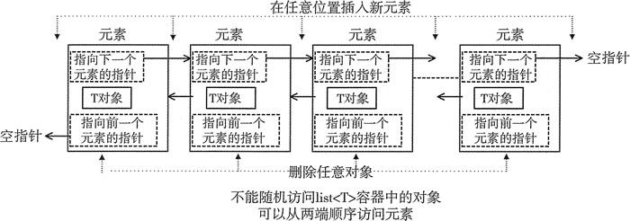
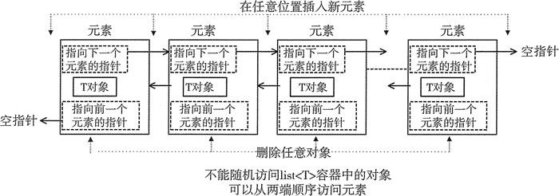

首页 > 编程笔记
C++ list(STL list)使用、创建和初始化
list<T> 容器模板定义在 list 头文件中，是 T 类型对象的双向链表。
list 容器具有一些 vector 和 deque 容器所不具备的优势，它可以在常规时间内，在序列已知的任何位置插入或删除元素。这是我们使用 list，而不使用 vector 或 deque 容器的主要原因。
list 的缺点是无法通过位置来直接访问序列中的元素，也就是说，不能索引元素。为了访问 list 内部的一个元素，必须一个一个地遍历元素，通常从第一个元素或最后一个元素开始遍历。
图 1 展示了 list 容器中的元素在概念上是如何组织的。

图 1 list<T>容器中元素的组织
list<T> 容器的每个 T 对象通常都被包装在一个内部节点对象中，节点对象维护了两个指针，一个指向前一个节点，另一个指向下一个节点。这些指针将节点连接成一个链表。通过指针可以从任何位置的任一方向来遍历链表中的元素。第一个元素的前向指针总是为 null,因为它前面没有元素，尾部元素的后向指针也总为 null。这使我们可以检测到链表的尾部。list<T> 实例保存了头部和尾部的指针。这允许我们从两端访问链表，也允许从任一端开始按顺序检索列表中的元素。
可以用和其他序列容器相同的方式，来获取 list 容器的迭代器。因为不能随机访问 list 中的元素，获取到的迭代器都是双向迭代器。以 list 为参数，调用 begin() 可以得到指向 list 中第一个元素的迭代器。通过调用 end()，可以得到一个指向最后一个元素下一个位置的迭代器，因此像其他序列容器一样，可以用它们来指定整个范围的元素。
也可以像其他容器一样，使用 rbegin()、rend()、crbegin()、crend()、cbegin()、cend() 来获取反向迭代器和 const 迭代器。
下面展示如何生成一个包含给定数量的相同元素的列表：
list 容器有一个拷贝构造函数，因此可以生成一个现有 list 容器的副本：
可以通过调用 list 容器的成员函数 size() 来获取它的元素个数。也可以使用它的 resize() 函数来改变元素个数。如果 resize() 的参数小于当前元素个数，会从尾部开始删除多余的元素。如果参数比当前元素个数大，会使用所保存元素类型的默认构造函数来添加元素。
list 容器具有一些 vector 和 deque 容器所不具备的优势，它可以在常规时间内，在序列已知的任何位置插入或删除元素。这是我们使用 list，而不使用 vector 或 deque 容器的主要原因。
list 的缺点是无法通过位置来直接访问序列中的元素，也就是说，不能索引元素。为了访问 list 内部的一个元素，必须一个一个地遍历元素，通常从第一个元素或最后一个元素开始遍历。
图 1 展示了 list 容器中的元素在概念上是如何组织的。

图 1 list<T>容器中元素的组织
list<T> 容器的每个 T 对象通常都被包装在一个内部节点对象中，节点对象维护了两个指针，一个指向前一个节点，另一个指向下一个节点。这些指针将节点连接成一个链表。通过指针可以从任何位置的任一方向来遍历链表中的元素。第一个元素的前向指针总是为 null,因为它前面没有元素，尾部元素的后向指针也总为 null。这使我们可以检测到链表的尾部。list<T> 实例保存了头部和尾部的指针。这允许我们从两端访问链表，也允许从任一端开始按顺序检索列表中的元素。
可以用和其他序列容器相同的方式，来获取 list 容器的迭代器。因为不能随机访问 list 中的元素，获取到的迭代器都是双向迭代器。以 list 为参数，调用 begin() 可以得到指向 list 中第一个元素的迭代器。通过调用 end()，可以得到一个指向最后一个元素下一个位置的迭代器，因此像其他序列容器一样，可以用它们来指定整个范围的元素。
也可以像其他容器一样，使用 rbegin()、rend()、crbegin()、crend()、cbegin()、cend() 来获取反向迭代器和 const 迭代器。
list 容器的使用、创建和初始化
list 容器的构造函数的用法类似于 vector 或 deque 容器。下面这条语句生成了一个空的 list 容器：std::list<std::string> words;可以创建一个带有给定数量的默认元素的列表：
std::list<std::string> sayings {20}; // A list of 20 empty strings
元素的个数由构造函数的参数指定，每一个元素都由默认的构造函数生成，因此这里调用 string() 来生成元素。下面展示如何生成一个包含给定数量的相同元素的列表：
std::list<double> values(50, 3.14159265);这里生成了一个具有 50 个 double 型值的列表，并且每一个值都等于 π。注意在圆括号中，不能使用初始化列表 {50,3.14159265}，这样列表将仅仅包含两个元素。
list 容器有一个拷贝构造函数，因此可以生成一个现有 list 容器的副本：
std::list<double> save_values {values}; // Duplicate of values
可以用另一个序列的开始和结束迭代器所指定的一段元素，来构造 list 容器的初始化列表：
std::list<double> samples {++cbegin(values), --cend(values)};
除了 value 中的第一个和最后一个元素，其他元素都被用来生成列表。因为 list 容器的 begin() 和 end() 函数返回的都是双向迭代器，所以不能用它们加减整数。修改双向迭代器的唯一方式是使用自增或自减运算符。当然，在上面的语句中，初始化列表中的迭代器可以代表任意容器的一段元素，而不仅仅只是 list 容器。可以通过调用 list 容器的成员函数 size() 来获取它的元素个数。也可以使用它的 resize() 函数来改变元素个数。如果 resize() 的参数小于当前元素个数，会从尾部开始删除多余的元素。如果参数比当前元素个数大，会使用所保存元素类型的默认构造函数来添加元素。
关注公众号「站长严长生」，在手机上阅读所有教程，随时随地都能学习。内含一款搜索神器，免费下载全网书籍和视频。

微信扫码关注公众号